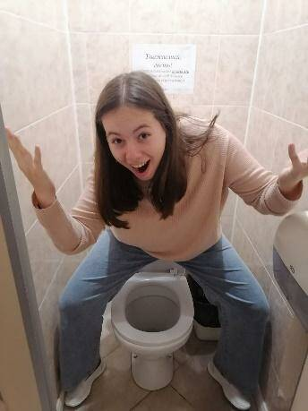

От Автора: Уважаемые читатели. Соболезную Вам, если вы читаете эту статью, так как после её прочтения ваш мозг окончательно атрофируется. Как всегда вставлю дисклеймер: статья не несёт никакой поучительной информации, она создана только для развлекательных целей. Ну а теперь желаю удачи всем спонсорам, а остальным пойти нахуй… …ган или задонатить нам свои последние деньги.
Ну что же, начнём как всегда мы с введения. В этой статье вы сможете прочитать о самом лучшем в моей жизни, моей девственности. А нет, к сожалению об этом в следующей статье. В этой же мы разберём СТАРОСТУ. Да ну нет, не этого Старосту. А Старосту нашего класса. Представляю вашему вниманию, лот номер один: Александра.
На самом деле Староста всегда одевает самые разные наряды, а так же снаряды. Она всегда одевается под нужную обстановку. Поэтому о внешнем виде мне сказать нечего, кроме того, что она очень привлекательная (для бомжей). А ну и так же, не могу не упомянуть, что у неё волосы-негры. Это очень важная деталь, не упустите её, пожалуйста.
На тему характера Старосты можно рассуждать очень долго. Но, к сожалению, мне нужно делать Д./З. по окружающему миру и я не смогу Вам многого о ней рассказать. Начнём с того, что Староста очень отзывчивый и добрый человек. Но это только на первый взгляд. Конечно, она поможет Вам, если что-то случится, но если вы её разозлите… У неё есть оружие и она может Вас спокойно уложить. Будьте бдительны, дорогие читатели! Не могу не упомянуть, что Староста часто проводит ивенты под названием «Раздача на спавне». Этим я могу выделить её доброту и милосердие. Но не забывайте, что у монеты всегда две стороны, не знаю к чему это поэтому переходим к следующей главе.
На вопрос: «Где живёт Староста?» одновременно и просто и сложно ответить. На первый взгляд, мы можем сказать, что основную часть времени она проводит в школе, где собственно она и живёт. Но всё не так просто дорогие читатели. На самом деле она живёт ВЕЗДЕ. Это можно подтвердить несколькими фактами: 1. Староста родила, создала всех людей на земле, на самом деле этот факт до конца не доказан, но всё же, это так и есть. 2. Староста самый умный человек на земле, это проявляется в том, что она снабжает домашним заданием сразу весь класс, спасибо ей за это. 3. Нельзя точно сказать, кто такая Староста. Это сверхчеловек? Верховное божество? Или всё же обычная Parastratiosphecomyia stratiosphecomyioides*. Никто точно не знает! На этом мы закончим данную главу. Не переключайтесь, впереди Вас ждёт ещё много интересного. А сейчас небольшая рекламная пауза: Когда ты начинаешь делать иначе, не каждый может представить всё то, что увидел ты. На это нужно время. За это время ты меняешь подход и устанавливаешь правила. И наступает момент, когда результат готов увидеть весь мир. Всё в твоих руках. Лучший розничный онлайн-банк в мире. Тинькофф — он такой один.
Чем же питается Староста? На самом деле это очень сложный вопрос, так как всю свою еду она раздаёт бедным голодающим детям. Есть теория, что она питается пятёрками. Теория заключается в том, что когда староста получает хорошую оценку по школьному предмету она поглощает её положительную энергию и переводит её в энергию для своего организма. Данный способ переработки положительной энергии оценок в энергию человека ещё не изучен, по этому мы предпочитаем другую теорию. Теория заключается в том, что Староста просто ест говно.

У старосты нет слабых сторон, это точная, 100% информация, и она не как не связана с тем, что Саша сейчас держит пистолет у моего виска. Фухх, она ушла и поэтому я могу написать здесь всю правду: …
Надеюсь вы недолго меня ждали, но придётся подождать ещё немного, так как писать одной рукой не очень удобно. Сильных сторон у Старосты очень много. Первая из них – это, конечно же, что она всегда раздаёт еду нищим. Второе, это то, что она всегда скидывает домашку нищим. Третья в том, что она ест говно. Ну а точнее любую пищу. У Старосты очень много сильных сторон, поэтому мы её так любим.
Я думаю, эта глава не нуждается в представлении и все уже прекрасно догадались, как можно использовать Старосту. Конечно же для того что бы запереть в подвале и жёстко отъеб… Кхм. Конечно же, для того, чтобы она делала за Вас домашнюю работу по биологии. Но и не только. Она может Вас кормить, убираться в доме, в общем быть настоящим домашним рабом. В паре с Денисом-рабом это будет отличное комбо! Поэтому советую заводить (во всех возможных смыслах этого слова) Старосту тем, кто не хочет делать грязную работу по дому, а так же тем, кому нужно бесплатное Д./З. по Окружающему миру (то есть мне).
Это очень важный и интересующий многих вопрос. Кстати, интересно, почему? Ну да ладно… Старосту можно поймать двумя способами: Первый способ: Для этого нам понадобиться: 1 Игорь и в принципе всё. Вам нужно просто заманить Старосту Игорем в ловушку, и всё готово. Способ второй: Способ немного сложнее, но зато более эффективный, ведь для первого способа нужно чтобы Игорь согласился, а так же, что бы Староста на него клюнула. Ведь она очень привередливая и не всегда хочет идти к Игорю в кроватку. Так вот, второй способ. Для него вам потребуется: Большой член предложения. А так же унитаз говна. Для начала расскажу как вам получить большой член предложения. Вам нужно разместить унитаз посреди комнаты и подождать, пока Староста на него отреагирует. После того как она его заметила и начала смачно чавкать можем забирать у неё Большой член, предложения. Если у вас всё получилось, то теперь дело за малым: Вам всего лишь то нужно полететь на марс и достать предмет под названием: Напрашиваться Перечница Тихоокеанец Fenya Get hung up Nippers Resettled. После того, как вы это сделаете выкиньте его нахрен! Так как я Вас обманул и он Вам не нужен. Бе бе бе. А Большой член предложения положите возле входа в класс Старосты. Она его заметит и зайдёт в класс. А вы закроете дверь. Староста успешно поймана!
Спасибо всем чёрным, белым и радугообразным за прочтение нашей статьи. Так же отдельное спасибо нашим спонсорам: TeaEnjoyer и СаСунчик. Если вы тоже хотите оказаться в нашей следующей статье - крадите карту вашей мамки и отправляйте пожертвование в размере любой суммы по ссылке ниже или номеру карты: 2200 7007 0428 7266. И так же вы можете держать с нами обратную связь через дискорд.
Желаю всем удачи. Ждите, читайте и деградируйте от наших статей каждую осень пятой недели четверга.
*кроличья нора глубже, чем ты думаешь